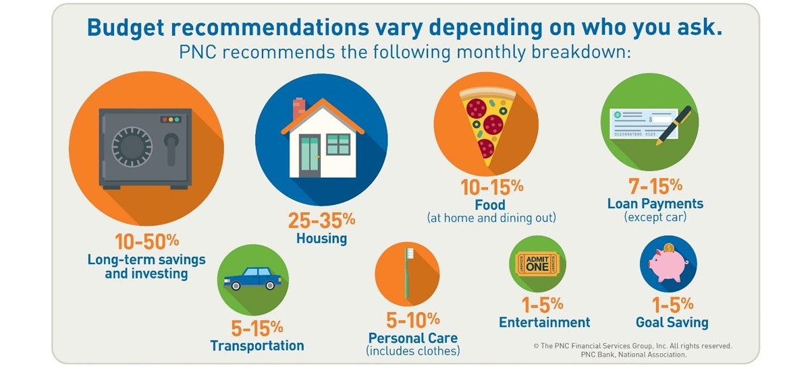

There are few habits in life that work for everyone, but budgeting is one of them. From the college student to the millionaire and everyone in-between, creating and sticking to a budget helps you prevent financial hardship, save for specific goals and even reduce stress.
Here are five strategies for building a budget that can lead you to financial freedom. Let’s follow “Olivia” as she works through her own budget.
- Establish how much money you make. This includes monthly net pay from sources like your job, pensions and social security. Olivia works as a paralegal. Her take-home pay is $32,000 a year, or $2,667 per month. You can figure out your net pay by collecting payment stubs and reviewing your previous year’s tax forms.
- Track how much you spend. This includes fixed expenses that don’t change from month to month, like Olivia’s $700 rent payment, and flexible expenses that do change, like utilities. There are several ways to track spending. You can use an accounting software or an online banking tool like PNC’s Virtual Wallet® – or use a debit card for a month to pay for everything. Then sit down and assign each purchase to a category like groceries or entertainment. Olivia was surprised to discover she spends $450 a month dining out. Those morning coffee runs and Friday dinners with friends really add up. Altogether, Olivia spends about $2,300 a month, leaving $367 a month to save, invest or spend. If Olivia was spending more than she earned, we would suggest that she look for ways to cut back.
- Define your goals. Break it into short- term goals (“I’d like to pay cash for a new dishwasher in three months”) and long-term goals (“I’d like to have zero student loan debt in five years”). Olivia wants to buy her nephew a new skateboard for his birthday next month. She also wants to increase her emergency fund for unexpected costs like an ER visit or car repairs.
- Save. Depending on your goals, this might mean saving money in checking where you can access the money whenever you want or opening long-term savings and investment accounts where you won’t be withdrawing funds for awhile. Olivia’s nephew wants a $200 skateboard. That means she’ll either have to save more than half of her left-over money this month to buy it or opt for a cheaper model so she can contribute more to her “rainy day” fund.
- Decide how you want to live your life. Happy nephew, or less stress when her car’s transmission goes bad? Olivia’s choice is what’s called a trade-off. Budgeting requires them frequently, and each person decides their “right” choice. Would you prefer to live in an exclusive neighborhood with great schools, or living in a cheaper area where you could save more money for family travel and earlier retirement? Thinking it through first will help you be financially ready, whatever you choose.
More questions about budgeting? Get more tips here and visit your nearest PNC branch to see what banking products can help you reach your goals.
TEXT VERSION OF IMAGE
Budget recommendations vary depending on who you ask. PNC recommends the following monthly breakdown.
- 10-50% long-term savings and investing
- 25-35% housing
- 10-15% food (at home and dining out)
- 7-15% loan payments (except car)
- 5-15% transportation
- 5-10% personal care (includes clothes)
- 1-5% entertainment
- 1-5% goal saving